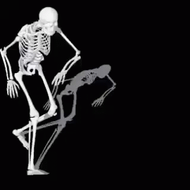

1. Cada soluço dura menos de 1 segundo e ocorre com frequência normal e regular de 5 a 25 vezes por minuto. O livro dos recordes menciona um soluço que durou 57 anos.
2. A cada sílaba que o homem fala, 72 músculos entram em movimento. Para sorrir, são utilizados 14 músculos. Para beijar, 29.
3. Uma pessoa de 75 anos que dorme uma média de 8 horas por dia passou 23 anos dormindo.
4. A temperatura do corpo não fica estabilizada o dia inteiro. Ela sobe para 37,2ºC às 5 ou 6 da tarde e vai caindo para 36ºC durante a madrugada.
5. O homem tem 46 cromossomos, que contêm os genes que determinam as características de cada pessoa, como cor dos olhos e formato do rosto.
6. Foi na Inglaterra do século XVIII que testaram em humanos as primeiras vacinas contra a varíola. As "cobaias" foram sete criminosos que, como recompensa, ganharam a liberdade. Ficaram livres, inclusive da doença.
7. O intestino delgado mede de 6 a 9 metros. O intestino grosso tem 1,5 metro, mas é três vezes mais largo.
8. O calcanhar de aquiles é uma das mais populares metáforas sobre a fragilidade humana. Tétis segurou seu filho Aquiles pelo calcanhar para mergulhá-lo num rio egípcio que o tornaria invencível. Queria contrariar um oráculo que dizia que seu filho morreria na guerra de Troia. Durante uma batalha, no entanto, Aquiles tomou uma flechada em seu único ponto vulnerável: o calcanhar, que não havia sido banhado no rio por sua mãe. A partir daí, a expressão calcanhar-de-aquiles indica um ponto fraco de uma pessoa.
9. O corpo é formado por 70% de água, que corresponde a metade de nosso peso. No organismo, a água transporta alimentos, resíduos e sais minerais; lubrifica tecidos e articulações; conduz glicose e oxigênio para o interior das células; e regula a temperatura. Um adulto elimina três litros de água por dia, através da urina, do suor e da respiração.
10. Os ruivos naturais têm uma mutação genética capaz de afetar a habilidade cerebral de processar remédios contra a dor, como o Novocain. Trata-se de uma variação do receptor genético melanocortina-1. Por causa disso, os ruivos são mais propensos a fugirem dos dentistas e a pedirem doses maiores de anestesia.